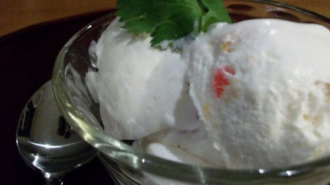

Description
Named after the wild and crazy town of Tijuana, this ice cream made with fruit, Jalapenos, and Tequila is just as wild! Includes directions for classic or custard style. This recipe also includes 2 variations for serving suggestions of fried ice cream burritos or ice cream balls (fried or no). Choose whichever works best for your cooking style/taste buds.
Ingredients
CLASSIC ICE CREAM
- 1 (15 ounce) can fruit cocktail, drained well (I use Libby's cherry cherry cherry in light syrup)
- 1-2 jalapeno, seeded and diced small
- 2 tablespoons tequila
- 1 ½ cups heavy cream
- ½ cup Splenda sugar substitute (or sugar)
- 1 teaspoon vanilla extract
CUSTARD STYLE
- 2 egg yolks (and classic ingredients)
FRIED ICE CREAM BURRITOS
- ice cream (from this recipe)
- cinnamon sugar
- 1 small flour tortilla
- frosted flakes, crushed well (or your favorite, crushed if needed)
Directions
- CLASSIC ICE CREAM: To the fruit cocktail, add jalapenos and tequila. Mix well, cover, and refrigerate.
- Mix the half and half with the sugar and vanilla. Stir until sugar is dissolve. Place milk/sugar mixture into machine and churn for 15-20 minutes. Add fruit mixture and continue churning until ice cream is formed (about 5 minutes). Scoop into a freezer safe container with lid, cover and freeze for at least 2 hours.
- Mix the half and half with the sugar and vanilla. Stir until sugar is dissolve. Place milk/sugar mixture into machine and churn for 15-20 minutes. Add fruit mixture and continue churning until ice cream is formed (about 5 minutes). Scoop into a freezer safe container with lid, cover and freeze for at least 2 hours.
- CUSTARD ICE CREAM: Combine the heavy cream, tequila, and chopped jalapenos in a saucepan and place over medium heat. Bring to a simmer, and cook gently about 10-12 minutes, then remove from the heat. Watch carefully so it does not boil.
- Meanwhile, in a bowl, whisk the sugar and vanilla into the egg yolks until slightly pale and lightened. Pour about 1/3 of the cream mixture into the yolks while whisking vigorously.
- Add the yolk mixture back into the saucepan with the rest of the cream mixture and cook over medium heat stirring constantly until the mixture thickens sufficiently to coat the back of spoon. DO NOT allow the custard to boil.
- Remove from the heat and place in the refrigerator to cool for at least 2 hours. When it has cooled, place in an ice cream maker and churn for 15-20 minutes. Add in the well drained fruit cocktail and churn an additional 5 minutes. Place into a freezer safe container, cover and chill at least 2 hours.
- FRIED BURRITOS: Form 1/4 cup of ice cream into a 4" long log (or use a sharp knife dipped in hot water to slice). Roll the ice cream in the cinnamon sugar to coat. Wrap in tortilla burrito style tightly, then wrap in plastic wrap tightly. Repeat for remaining burritos. Place in the freezer to harden at least 2 hours.
- Heat deep fryer to 350°F Unwrap burritos from plastic wrap and carefully place burritos into fry basket ONE at a time. Deep fry for 2-3 seconds. Flip over and fry the other side for 2-3 seconds. Serve with whipped cream and a cherry.
- ICE CREAM BALLS: Scoop about 1/4 cup of ice cream and quickly form it into a ball. Roll in cinnamon sugar, then in crushed cereal, place on cookie sheet and keep frozen. When ready to serve, Serve as is, or deep fry for 2-3 seconds then drain on paper towels for a few seconds. Serve in a shallow bowl drizzled with chocolate and caramel toppings.
Return to top
Return to home page